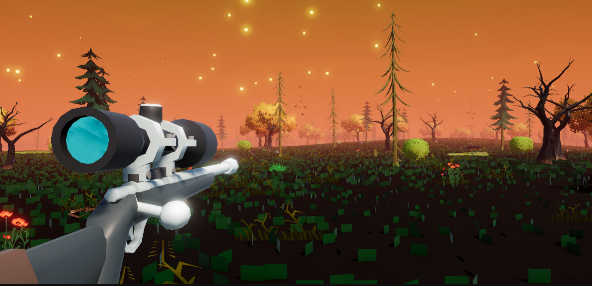
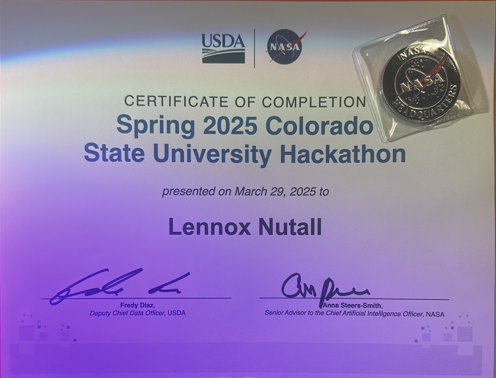
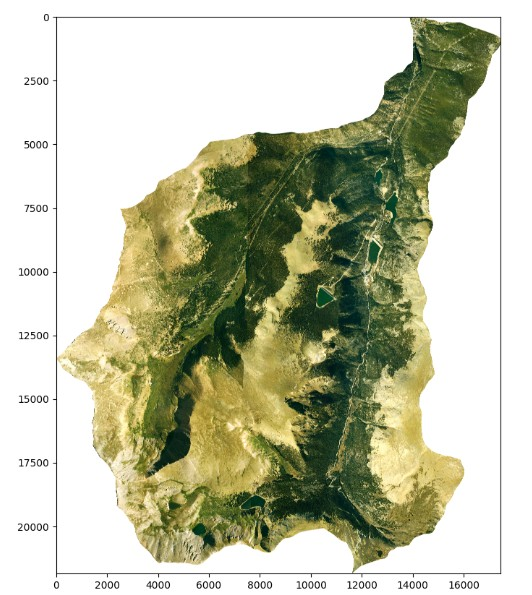
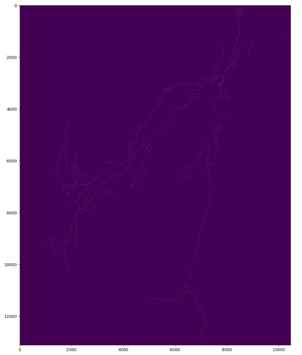
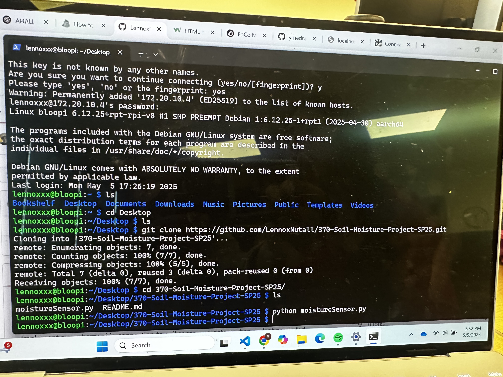
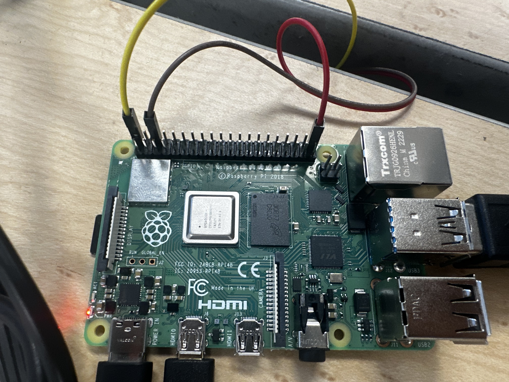
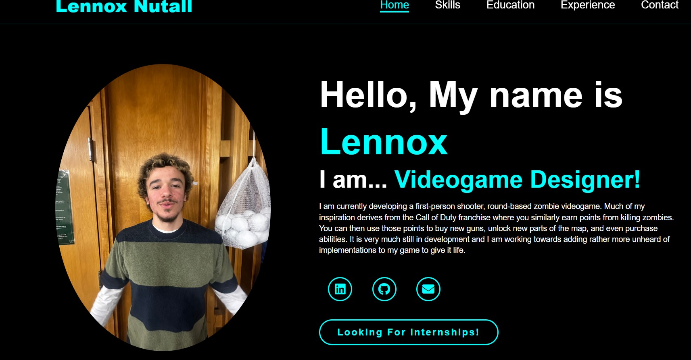

Experience

A first-person, round-based zombie game where the player is able to gain points by killing zombies to then use to purchase other weapons, abilities, or even unlock new parts of the map. Although my creation is heavily inspired by the Call of Duty Franchise, I plan on implementing rather unique game mechanics to allow a more independent identity. With all of that being said, this project is still very much in development and there is a lot of ideas to tackle.





Collaborated with a team to develop an AI model for mapping uncharted roads using high-resolution LiDAR data, including digital terrain models and hillshade imagery. Processed geospatial datasets to improve road network accuracy for Forest Service and nearby lands, and applied machine learning techniques to enhance road detection for use in forest management, wildfire response, transportation, and recreation planning. Presented the resulting algorithm to judges from NASA, Amazon, and the USDA, demonstrating strong technical skills in AI-driven geospatial analysis.


This project focused on using a raspberry pi 4b combined with a moisture sensor to feed a plant water. The sensor would read the moisture level of the soil using voltage and send that data back to the raspberry pi. From there, the codebase would determine whether or not the plant needed water based off the moisture(voltage) level of its soil.

Completed a 5-month software engineering course focused on building and maintaining a production-scale web application using Agile and Scrum methodologies. Collaborated in a team development environment to write clean, testable code and implement automated tests for a mobile single-page application with RESTful API services. Utilized modern DevOps tools and CI/CD workflows to support continuous integration and deployment, and leveraged Postman to benchmark APIs by analyzing response times, payload efficiency, and status codes to identify performance bottlenecks and ensure service-level compliance.
Developed algorithms over a 5-month period to analyze and compare image histograms using multiple similarity measures and histogram normalization techniques across arbitrary PGM files. Implemented a perceptron-based classifier and trained it over multiple epochs to distinguish between positive and negative image samples, achieving optimal decision boundaries through iterative learning. I would like to note that there is no attatched photo because this project had nothing tangible to represent: Since I was working with creating adjusted calculations derived from spatial data sets where there were only numberical data to be outputted.

This project is exactly what you are using to navigate through as we speak! I have never really developed a website until now, so there was so many opportunities to learn. This challenge allowed me to become acclimated with HTML, CSS, and a hint of JavaScript. It took many, many hours to become satisfied with the "finished" product and with that, tons of research to be able to make this happen. Nevertheless, I am excited and content with what I've accomplished.